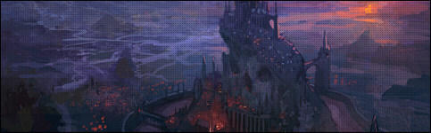

英雄联盟的历史
直到二十年前，符文之地才从战乱中解脱。这片大陆上的人民自远古以来就习惯结群而斗，用战争解决纷争。而不论何时，战争的工具始终都是魔法。军队用法术和符文武装自己，英雄们打造出大部分魔法物品率领部队彼此厮杀。召唤师，瓦洛兰大陆的实际领导者们，他们疯狂使用魔法能量攻击敌人的部队和支持者。他们拥有近乎无限的原始魔法力量，从未考虑过无止境的滥用魔法会给这片大陆的环境带来怎样的灾难。 然而近200年来无止境的魔法滥用让瓦洛兰的人民看到了符文之地的脆弱现状。最后两次符文之战极大地影响了瓦洛兰的地质环境，尽管人们试图聚集魔法能量来恢复这灾难性的后果，却毫无作用。剧烈的地震和恐怖的魔法风暴让整个瓦洛兰为之颤抖，对人们来说这份恐惧远超过战争的可怖。人们终于意识到世界已经承受不起符文之战的破坏 为了回应世界上不断恶化的政治和经济危机，瓦洛兰的大法师们——包括许多强大的召唤师——达成共识，所有的冲突必须以可控和系统化的方式来处理。他们成立了一个叫英雄联盟的组织，目的在于监督瓦洛兰的政治纷争，使其得以有序处理。位于战争学院的英雄联盟得到瓦洛兰政治实体们陆续授权，这个组织将管理、处置所有政治纷争所带来的结果。 英雄联盟决定，所有重大的政治纷争须通过专门设立在瓦洛兰各地的竞技场来处理。拥有不同政见的召唤师们各自召唤一个英雄，这些英雄们带领没有心智意识的小兵进行战斗，这些小兵由初阶召唤者通过水晶枢纽产生。它们将在竞技场内中对决，达成任务的目标获取胜利。而其中最常见的胜利条件为摧毁对方的水晶枢纽。这些竞技场即是我们通常提到的正义之地。 虽然主要的政治冲突已经通过英雄联盟进行了处理，但敌对政治实体间仍不断出现冲突。英雄联盟通过一项战略性对策，在对立的德玛西亚和诺克萨斯之间建立了战争学院,虽然零星的武装冲突时有发生，但两者几乎停止了所有的直接对抗，。现在好战的诺克萨斯最高指挥部已经把目标转移到了征服近海地区。虽然所有的政治实体都忍受着英雄联盟的管理，但没人傻到去招惹如此多的强大法师、召唤师和英雄。 由英雄联盟管理、在正义之地展开的战斗对瓦洛兰而言，不仅有着极大的政治意义，还有巨大的社会价值。英雄联盟通过魔法将战场的影像和音像传送到魔法接收器上展示出来，观看正义之地的战斗已经成为瓦洛兰居民越来越热衷的娱乐项目。 英雄联盟由著名的最高公正议会监管，议会则由三位强大的高级召唤师组成。自从5年前，前最高议员雷吉纳德•阿什拉姆神秘消失后，拉里瓦什接替了他的职位。公正议会不仅要领导英雄联盟，同时也担任着瓦洛兰最高裁判所的职责，裁决瓦洛兰各政治势力的冲突。 英雄联盟特使：特使被派遣到瓦洛兰各个城邦展现联盟的意志。此外，特使还是联盟在城邦的代表。 审判者：审判者是指派到各个正义之地裁决比赛的仲裁人员。 议会：这个以高阶召唤者为主体的组织负责解决瓦洛兰的政治纠纷。议会竞技场的战斗结果来裁决纠纷。 英雄联盟通过内部组织的形式来完成各种任务。英雄联盟会向每个城邦都委派一位联盟密使，他们是当地维护联盟关系的外交官。密使也是联盟在城邦的政治代表。审判者是委派到各个正义之地裁决比赛的仲裁人员。议会是以高阶召唤师为主体的组织，负责解决瓦洛兰的政治纷争。议会以竞技场的战斗胜负来裁决纷争